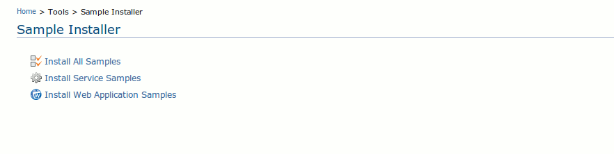

As indicated in Figure 1, you could install either Web Application samples, Web service samples or Web service & Web application samples. If the samples are not already installed, clicking on these links will install them. The relevant artifacts in the samples will take a few seconds to deploy, so you will have to wait for a while before checking out the Web service or Web application list.

Figure 1: Sample Installer